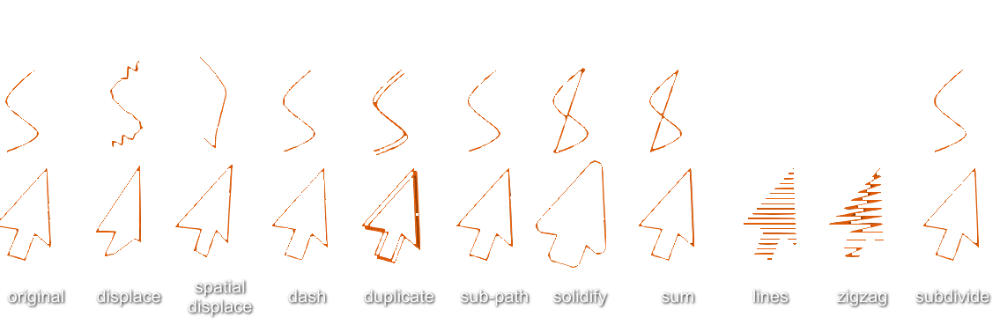
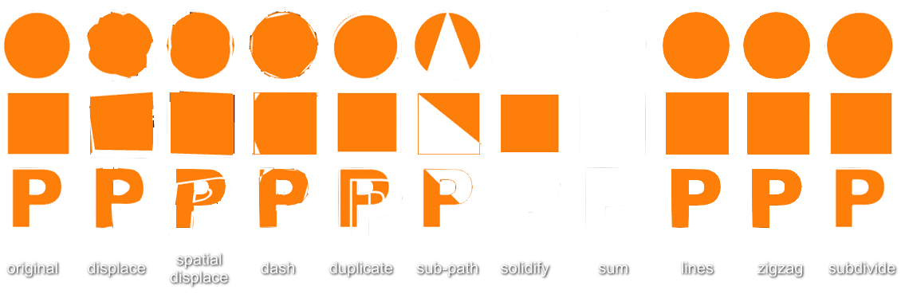

Effects
Effects can be applied to any object, path, image or text.
To apply them it is needed to open the contextual menu (secondary mouse button) while selecting an object and select a type of Effect.
Raster Effects
Raster effects are applicable to shapes and images and the effect applied or rendered as bitmap, that is, pixel based or raster.
Friction comes with the following effects installed:

Users can install their own shaders or start by installing this bundle with lots of them. The installation that can be checked in Preferences > Shaders or changed to any custom one. More information about custom shaders can be found under Shaders section.
Next to an applied raster effect label, there is an icon that lets users choose who renders it if the CPU or the GPU:

In Preferences > Hardware > Raster Effects it is possible to set the default rendering one.
Path Effects
The effects that can be applied to stroke, fill and outer line are the same for all.
These effects have properties that can be animated.

Fill Effects
The effects that can be applied to stroke, fill and outer line are the same for all.
These effects have properties that can be animated.

Outline Base Effects
The effects that can be applied to stroke, fill and outer line are the same for all.
These effects have properties that can be animated.


Outline Effects
The effects that can be applied to stroke, fill and outer line are the same for all.
These effects have properties that can be animated.
